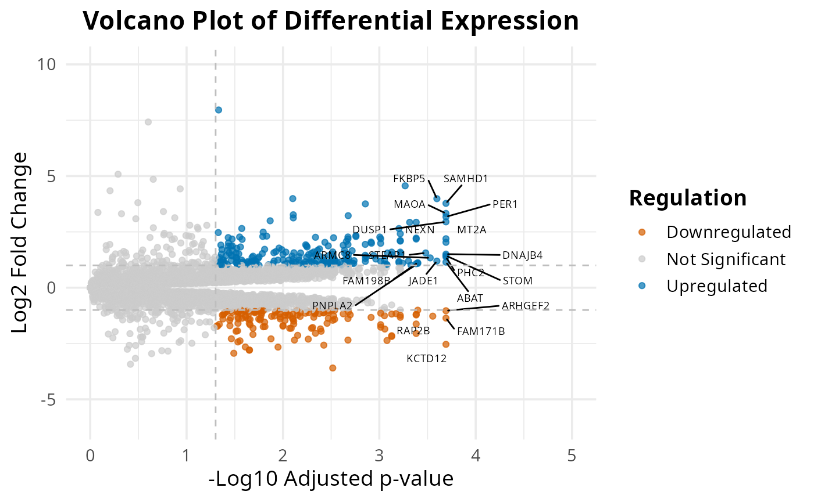
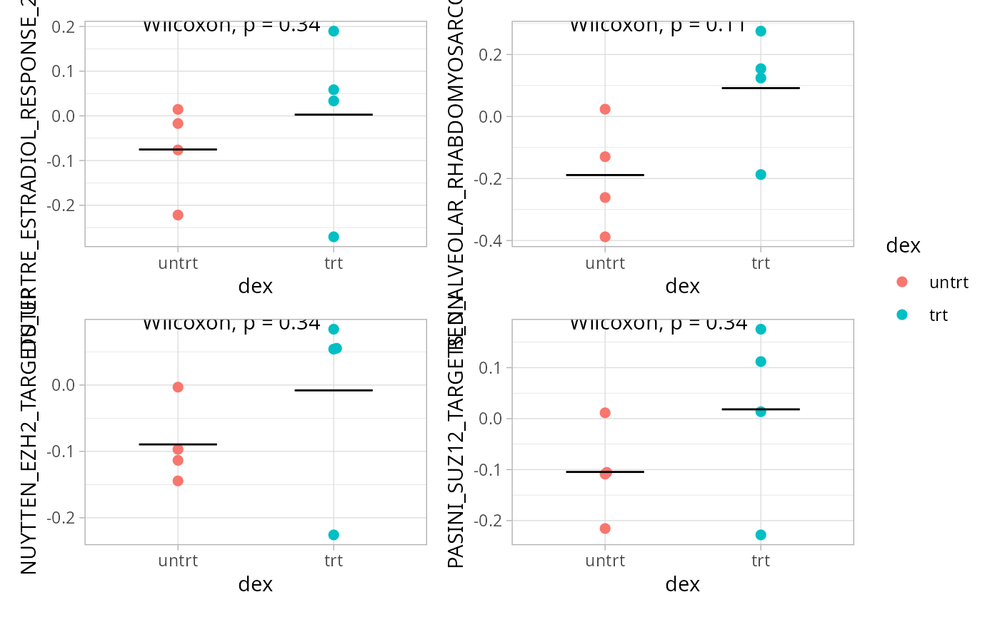

Unsupervised RNA-seq analysis
Cordeliers Artificial Intelligence and Bioinformatics
2025-05-12
Source:vignettes/sup_rnaseq.Rmd
sup_rnaseq.Rmd
For the 2 examples, we are using an open dataset which is given by
the airway package. It provides a gene expression dataset
derived from human bronchial epithelial cells, treated
or not with dexamethasone (a corticosteroid).
Here is an example of how the supervised part of the
CAIBIrnaseq package can be use.
First, we need to import the required packages :
library(airway)
library(SummarizedExperiment)Before analysing the dataset, we define the variables with the names of the genes / pathways … that we want to analyse.
These variables will change in function of how your dataset is build and which type of data it is.
If you find the definition of the variables heavy in your code, you
can create a .yml file, for example named
params.yml, call it in a cell, and it will automatically
import the variables. Your code will be clearer.
annotation <- "dex"
diffexpMethod <- "limma" # Either limma or deseq2
species <- "human"
pathwayMethod <- "ora" # We can run ORA or fgsea, we should change it at this step
collections <- c("CGP", "CP", "CP:KEGG_LEGACY", "CP:BIOCARTA")
# Pathways plus pertinents :
pathwayOfInterest <- list("HALLMARK_INFLAMMATORY_RESPONSE", "GOBP_RESPONSE_TO_GLUCOCORTICOID","GOBP_REGULATION_OF_CELL_PROLIFERATION","HALLMARK_APOPTOSIS")
boxplot_pathways <- list("HALLMARK_INFLAMMATORY_RESPONSE","GOBP_RESPONSE_TO_STEROID_HORMONE")
heatmap_genes <- list(
Inflammation = c("IL6", "TNF", "RELA", "NFKBIA", "JUN", "STAT3"),
SteroidResponse = c("NR3C1", "FKBP5", "TSC22D3", "ZBTB16"),
Metabolism = c("LDHA", "PDK1", "G6PD", "ACACA")
)
heatmap_pathways <- c(
"KUMAMOTO_RESPONSE_TO_NUTLIN_3A_UP",
"BIOCARTA_SALMONELLA_PATHWAY",
"CASTELLANO_HRAS_TARGETS_DN",
"FARDIN_HYPOXIA_9"
)Do not forget to import the package ! ;-)
Load data
This section loads the RNA-seq dataset for analysis. It ensures the correct input file is used, as specified in the parameters. rebase_gexp
Ensure your dataset is in a Summarized Experiment
object, because all the used functions below works with
SummarizedExperiment input.
If you want to know more about this type of object, please click here: Bioconductor
data(airway, package="airway")
exp_data <- airwayEven if the datasets are globally build the same way, the names of the variables are not exactly the same, so if we want to keep the same code, we need to redefine a bit the variables.
If you want to know what are the used variables in this part, run
this command line :
colnames(SummarizedExperiment::rowData(exp_data))
You should have these variables (with these exact same names):
- gene_name : The commonly used symbol or name for the
gene (e.g., A1BG).
- gene_id : A unique and stable identifier for the
gene, often from databases like Ensembl (e.g., ENSG00000141510).
- gene_length_kb : The length of the gene measured in
kilobases
- gene_description : A brief textual summary of the
gene’s function or characteristics, often pulled from annotation
databases.
- gene_biotype : A classification of the gene based on
its biological function or transcript type, such as protein_coding,
lncRNA, or pseudogene.
If not, you should look at how your dataset is defined. You might need to run some command line as the following ones:
rowData(exp_data)$gene_length_kb <-
(rowData(exp_data)$gene_seq_end - rowData(exp_data)$gene_seq_start) / 1000
library(biomaRt)
# Initialiser biomaRt pour Ensembl humain
mart <- useEnsembl("ensembl", dataset = "hsapiens_gene_ensembl")
# Obtenir les descriptions basées sur les gene_id
gene_ids <- rowData(exp_data)$gene_id
annot <- getBM(attributes = c("ensembl_gene_id", "description"),
filters = "ensembl_gene_id",
values = gene_ids,
mart = mart)
# Faire correspondre les descriptions aux lignes de rowData
matched <- match(rowData(exp_data)$gene_id, annot$ensembl_gene_id)
rowData(exp_data)$gene_description <- annot$description[matched]Pre-processing
Most datasets use ensembl gene ID by default after alignment, so this step rebases the expression data to gene names. This ensures consistency in naming for downstream analyses.
exp_data <- rebase_gexp(exp_data, annotation = "gene_name")Filter
Here, we filter out genes expressed in too few samples or with very low counts. This removes noise from the data and focuses on meaningful gene expressions.
exp_data <- filter_gexp(exp_data,
min_nsamp = 1,
min_counts = 1)Visualization of the filtering process to ensure the criteria applied align with the dataset’s characteristics:
colData(exp_data)$sample_id <- colnames(exp_data)
plot_qc_filters(exp_data)## Warning: Removed 8 rows containing missing values or values outside the scale range
## (`geom_text_repel()`).## Warning in geom2trace.default(dots[[1L]][[1L]], dots[[2L]][[1L]], dots[[3L]][[1L]]): geom_GeomTextRepel() has yet to be implemented in plotly.
## If you'd like to see this geom implemented,
## Please open an issue with your example code at
## https://github.com/ropensci/plotly/issuesNormalize
Here, we apply a normalization to the expression data, making samples
comparable by reducing variability due to technical differences. For
datasets with few samples, rlog is the preferred
normalization and when more samples are present, vst is
applied.
exp_data <- normalize_gexp(exp_data)PCA
Principal component analysis (PCA) identifies the major patterns in the dataset. These patterns help explore similarities or differences among samples based on gene expression.
heatmap_genes <- list(
DNA_repair = c("BRCA1", "BRCA2", "ATM", "ATR", "CHEK1", "CHEK2", "RAD51", "XRCC1"),
Metabolism = c("ACLY", "ACACA", "FASN", "G6PD", "HK2", "LDHA", "PDK1"),
Cell_Cycle = c("CDK1", "CDK2", "CCND1", "CCNE1", "RB1", "TP53", "E2F1")
)
S4Vectors::metadata(exp_data)[["pca_res"]] <- pca_gexp(exp_data)
annotations <- setdiff(annotation, c("exp_cluster", "path_cluster"))
plot_pca(exp_data, color = annotation)Diffexp
library(edgeR)
colData(exp_data)$dex <- factor(colData(exp_data)$dex)
colData(exp_data)$dex <- factor(colData(exp_data)$dex, levels = c("untrt", "trt"))
diffexp <- diffExpAnalysis(countData = assays(exp_data)$counts,
sampleInfo = colData(exp_data),
method = diffexpMethod, cutoff = 10,
annotation = annotation)
Diffexp Filtering
if(tolower(diffexpMethod) == "limma") {
diffexp <- diffexp |>
dplyr::rename(
log2FoldChange = logFC,
pvalue = P.Value,
padj = adj.P.Val
)
}
diffexp_filtered <- diffexp |>
dplyr::filter(padj <= 0.05) |>
dplyr::arrange(padj)
# Sélectionner les 30 gènes les plus différentiellement exprimés
top_de_genes <- rownames(diffexp_filtered)[1:16]##Volcano plot
volcano_plot <- plot_exp_volcano(diffexp, 20)
volcano_plot## Warning: Removed 10107 rows containing missing values or values outside the scale range
## (`geom_text_repel()`).
volcano_plot + ggplot2::coord_flip()## Warning: Removed 10107 rows containing missing values or values outside the scale range
## (`geom_text_repel()`).
Pathway analysis
msigdbr::msigdbr_collections() |> kableExtra::kbl() |> kableExtra::kable_styling() |> kableExtra::scroll_box(height = "300px")| gs_collection | gs_subcollection | gs_collection_name | num_genesets |
|---|---|---|---|
| C1 | Positional | 302 | |
| C2 | CGP | Chemical and Genetic Perturbations | 3494 |
| C2 | CP | Canonical Pathways | 19 |
| C2 | CP:BIOCARTA | BioCarta Pathways | 292 |
| C2 | CP:KEGG_LEGACY | KEGG Legacy Pathways | 186 |
| C2 | CP:KEGG_MEDICUS | KEGG Medicus Pathways | 658 |
| C2 | CP:PID | PID Pathways | 196 |
| C2 | CP:REACTOME | Reactome Pathways | 1736 |
| C2 | CP:WIKIPATHWAYS | WikiPathways | 830 |
| C3 | MIR:MIRDB | miRDB | 2377 |
| C3 | MIR:MIR_LEGACY | MIR_Legacy | 221 |
| C3 | TFT:GTRD | GTRD | 505 |
| C3 | TFT:TFT_LEGACY | TFT_Legacy | 610 |
| C4 | 3CA | Curated Cancer Cell Atlas gene sets | 148 |
| C4 | CGN | Cancer Gene Neighborhoods | 427 |
| C4 | CM | Cancer Modules | 431 |
| C5 | GO:BP | GO Biological Process | 7608 |
| C5 | GO:CC | GO Cellular Component | 1026 |
| C5 | GO:MF | GO Molecular Function | 1820 |
| C5 | HPO | Human Phenotype Ontology | 5653 |
| C6 | Oncogenic Signature | 189 | |
| C7 | IMMUNESIGDB | ImmuneSigDB | 4872 |
| C7 | VAX | HIPC Vaccine Response | 347 |
| C8 | Cell Type Signature | 840 | |
| H | Hallmark | 50 |
pathways <- get_annotation_collection(collections,
species = species)
pathwayResult <- pathwayAnalysis(diffexp_filtered,
pathways = pathways,
method = pathwayMethod, species = species) |> as.data.frame()
rownames(pathwayResult) <- pathwayResult$pathway
S4Vectors::metadata(exp_data)[["pathwayEnrichment"]] <- pathwayResult
# Trier selon PValue croissante (plus significatif en haut)
pathwayResult_sorted <- pathwayResult[order(pathwayResult$PValue), ]
# Garder uniquement les 10 premiers
top10_pathways <- head(pathwayResult_sorted, 10)
pathwayDotplot <- plot_pathway_dotplot(exp_data, score_name = "pathwayEnrichment")
pathwayDotplot “SRR1039508” “SRR1039509” “SRR1039512” “SRR1039513” “SRR1039516” [6]
“SRR1039517” “SRR1039520” “SRR1039521”
“SRR1039508” “SRR1039509” “SRR1039512” “SRR1039513” “SRR1039516” [6]
“SRR1039517” “SRR1039520” “SRR1039521”
On the heatmaps, we can tell that the top_genes expressions are higher for the treated samples? It means that these genes are the ones that are involved in the treatment response.
heatmap_genes <- list(c( "STOM","PHC2", "MT2A", "ABAT","DUSP1","PER1","KCTD12", "SAMHD1"), c("FAM171B","MAOA","NEXN","DNAJB4","ARHGEF2","FKBP5","JADE1","RAP2B"))
hms <- lapply(1:length(heatmap_genes), function(i) {
genes <- heatmap_genes[[i]]
name <- ifelse(is.null(names(heatmap_genes)), i, names(heatmap_genes)[i])
hm <- plot_exp_heatmap(exp_data, genes = genes,
annotations = annotation,
show_rownames = ifelse(length(genes) <= 100, TRUE, FALSE),
hm_color_limits = c(-2,2),
show_dend_row = FALSE,
fname = stringr::str_glue("results/sup/targeted/{pathwayMethod}/hm_genes_{i}.pdf"))
})
patchwork::wrap_plots(hms, ncol = 2, guides = "collect")
dir.create(file.path("results", "sup", "targeted", pathwayMethod, "boxplots"), recursive = TRUE, showWarnings = FALSE)
pathway_scores <- score_pathways(exp_data, pathways, verbose = FALSE)
S4Vectors::metadata(exp_data)[["pathway_scores"]] <- pathway_scores
boxplots <- lapply(heatmap_pathways, function(path) {
lapply(annotation, function(annotation) {
plt <- plot_path_boxplot(exp_data,
pathway = path,
annotation = annotation,
color_var = annotation,
pt_size = 2,
fname = stringr::str_glue("results/sup/targeted/{pathwayMethod}/boxplots/box_{path}_{annotation}.pdf"))
})
}) |> purrr::flatten()
patchwork::wrap_plots(boxplots, nrows = round(length(boxplots)/2), guides = "collect")